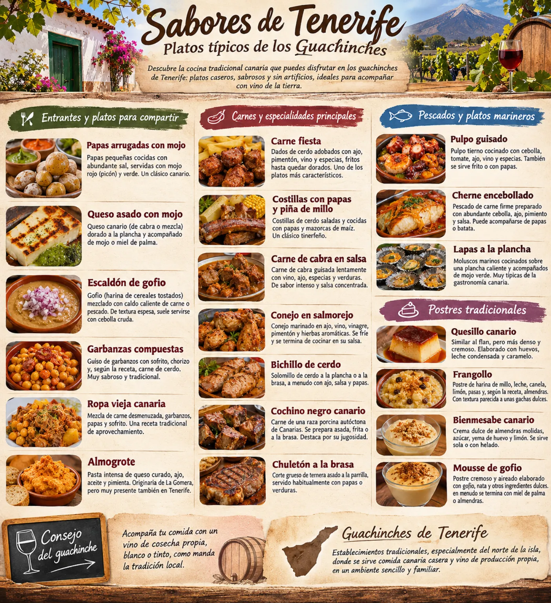

Plan diario
Día 1 · Llegada y Los Cristianos
Recoged el coche en Tenerife Norte antes de salir hacia el sur. Seguid el punto de encuentro del bono de alquiler. Aena sitúa los mostradores de alquiler de la terminal en la planta 0. Tened a mano el bono, el permiso de conducir y el DNI o pasaporte. Dejad la tarde libre para pasear junto al mar, entre el puerto y Las Vistas.
Para dejar el coche bajo techo, consultad el parking INDIGO de Los Cristianos.
Día 2 · La Laguna
10:30 · La Laguna a pie. Aparcad en Las Quinteras y recorred plaza del Adelantado, calle San Agustín y plaza de la Concepción.
13:30 · Comida. Bodegón Viana, de cocina canaria, o Laguna Nivaria, en la plaza del Adelantado.
15:30 · Casco histórico o Anaga. Quedaos a pasear por la ciudad o, si el tiempo acompaña, acercaos al Mirador de Jardina y a Cruz del Carmen. Elegid una opción para ir con calma.
Día 3 · Santa Cruz y Las Teresitas
10:30 · Mercado y casco histórico. Dejad el coche en el aparcamiento del Mercado de Nuestra Señora de África. Visitad la Recova y seguid a pie por la plaza de la Iglesia de la Concepción, la plaza de la Candelaria y la plaza de España.
12:00 · Mercadillo navideño. Desde la plaza de España, acercaos a la Alameda del Duque de Santa Elena. El mercadillo abre el 16 de diciembre a las 10:00. Si os apetece alargar el día, esa noche hay concierto a las 20:00 en la plaza de la Candelaria. Programa oficial de Navidad.
13:30 · Comida en San Andrés. La Pandorga, en Bartolomé Belza 4. Como alternativa, El Petón, en la calle Aparejo. Comprobad el horario antes de ir.
15:30 · Las Teresitas. Id al aparcamiento de la playa y dejad la tarde libre para pasear junto al mar. Después podéis regresar al sur o volver al centro para el concierto.
Día 4 · Puerto de la Cruz y La Orotava
10:30 · Puerto de la Cruz. Probad la explanada del muelle. Pasead por el puerto, la plaza del Charco y las calles de La Ranilla.
13:30 · Guachinche. Los Gómez o La Cernidera. Confirmad que abren antes de desplazaros.
15:30 · La Orotava. Paseo por la Casa de los Balcones, la iglesia de la Concepción y la plaza del Ayuntamiento. Si preferís visitar el mercado navideño de Los Realejos, reservad esa alternativa para el 18–20 de diciembre.
Día 5 · Garachico e Icod
10:30 · Garachico. Aparcad en la explanada del antiguo muelle. Pasead por la plaza de la Libertad, el castillo de San Miguel y El Caletón desde el paseo.
13:30 · Comida. Arístides en el casco o Proa Norte cerca del aparcamiento.
15:30 · Icod de los Vinos. Visitad el casco y la plaza de Andrés de Lorenzo Cáceres. Si queréis entrar al Parque del Drago, consultad el horario de acceso.
Día 6 · Los Gigantes y Playa San Juan
10:30 · Los Gigantes. Parada en el Mirador de Archipenque y paseo por el pueblo.
13:30 · Playa San Juan. Usad el aparcamiento público al inicio del paseo. Para comer, Agua y Sal o Plazale.
15:30 · Paseo marítimo. Podéis quedaros junto a la playa o caminar hacia el acantilado de la Isorana. Masca queda como alternativa de mañana si os apetece dedicarle más tiempo y hay buena visibilidad.
Día 7 · El Médano o descanso en el sur
11:00 · El Médano. Dejad el coche en el aparcamiento del campo de fútbol. Pasead de la plaza Roja a la playa de Leocadio Machado.
13:30 · Comida. El Templete o El Picú.
Tarde flexible. Si hay viento o preferís un día corto, cambiad El Médano por Las Vistas o por un paseo al atardecer por La Caleta y Costa Adeje. Candelaria es otra alternativa si os apetece un paseo urbano junto al mar.
Día 8 · Regreso
Salid hacia Tenerife Norte con margen para devolver el coche antes de ir a la terminal. Usad la dirección de devolución del bono, revisad el nivel de combustible que exige el contrato y guardad el justificante de entrega.
Alternativas de Navidad
Costa Adeje. Atlantic Markets, del 12 al 24 de diciembre, en Parque Royal. Consultar la agenda.
Los Realejos. Mercado navideño del 18 al 20 de diciembre, en las plazas Viera y Clavijo y de La Unión, en Realejo Bajo. Consultar programa.
Dónde comer
Guachinches por zonas
Sur. Cas Toñito · La Maestra
La Orotava y Los Realejos. Ramón · La Cernidera · Los Gómez · Mi Casa Pedro
Santa Úrsula y norte. La Bodega · Don Trino · Octava Isla
Santa Cruz. Bibi y Mana · El Escondite de Lucas
Consultad el horario y el precio actuales antes de salir. Consultar más opciones y reseñas.
Comida canaria · fotos y platos


Para compartir
- Papas arrugadas con mojo y queso asado
- Escaldón de gofio, garbanzas compuestas, ropa vieja y almogrote
Carnes
- Carne fiesta, cabra en salsa y conejo en salmorejo
- Costillas con papas y piña de millo, bichillo, cochino negro y chuletón
Del mar
- Pulpo guisado, cherne encebollado y lapas a la plancha
Postres
- Quesillo, frangollo, bienmesabe y mousse de gofio
Mapas y aparcamientos
Calle del Valle Menéndez. Cubierto, de pago y abierto 24 horas, con barrera y reconocimiento de matrícula. Altura máxima de 2,20 m. Consultar tarifa y reserva.
Aparcamientos en La LagunaAparcamientos en Santa Cruz
Cómo llegar a Tenerife Norte